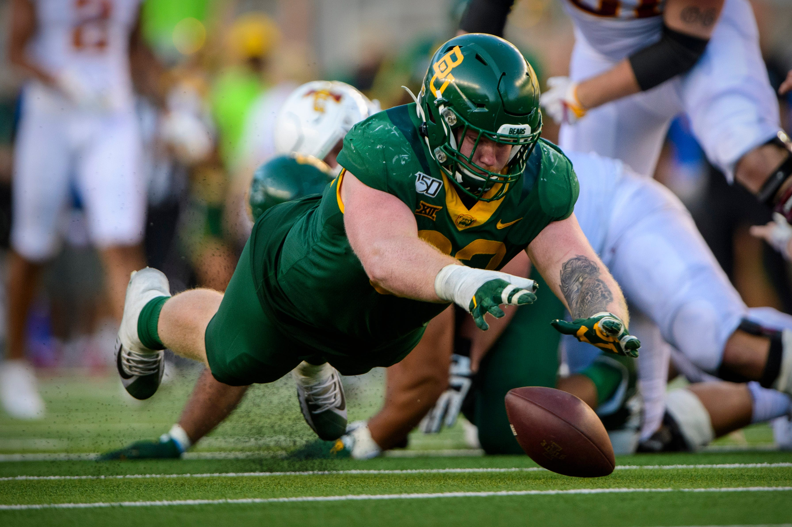
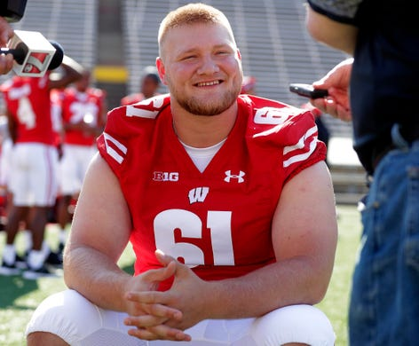

5/16/2020
Top Ten Steals of 2020 NFL Draft
Every year teams spend months studying film and interviewing players.
Unfortunatley, this year this process was interrupted by the COVID-19 pandemic
and teams had to become creative on how to evalute the future stars of the NFL.
Even during the strange times some teams
were still able to make a splash in the NFL draft and find some hidden gems. To highlight the biggest steals, ranking order was based
on where a player was drafted versus where they were projected to be drafted using
FiveThirtyEight's
as a reference. Below you can find the list of 10 players that have the potential to be superstars.
- DE James Lynch, Baylor 
- C Tyler Biadasz, Wisconsin 
- S Brian Cole II, Mississippit State
- DE Kenny Willekes, Michigan State
- CB Bryce Hall, Virginia
- WR K.J. Hill, Ohio State
- DE Curtis Weaver, Boise State
- OT Prince Tega Wanogho, Auburn
- DE Bradlee Anae, Utah
- OG Netane Muti, Fresno State
Round Taken:Round 4
Team Drafted By:Minnesota Vikings
Actual:130
Projected:59.3
Difference:70.7
Round Taken:Round 4
Team Drafted By:Dallas Cowboys
Actual:146
Projected:69.3
Difference:76.7